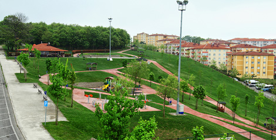
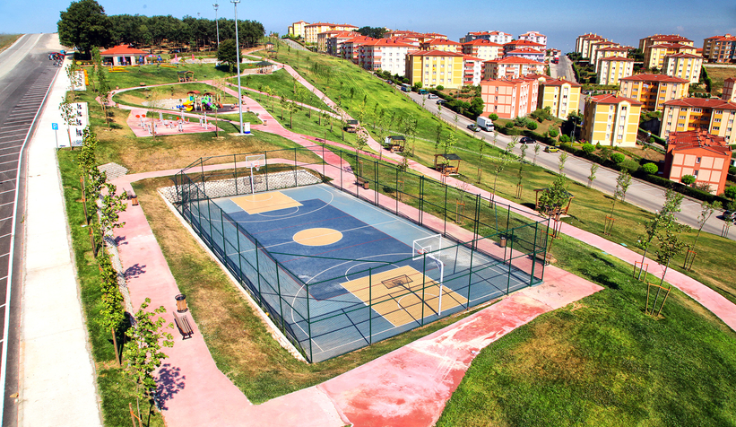

Merhaba ben Selman Mirza.
16 Eylül 2006 Sakarya doğumluyum. Korucuk mahallesinde oturuyorum ve hayatımın büyük çoğunluğu bu mahallede geçti. Şu anda ise Sakarya Üniversitesinde Bilgisayar Mühendisliği Bölümünde okuyorum.
Hobilerim
- Futbol oynamak
- Basketbol oynamak
- Bilgisayar oyunları oynamak
- Arkadaşlarla vakit geçirmek
- Maç izlemek

Sevdiğim Linkler

Yaşadığım yer hakkında görseller

